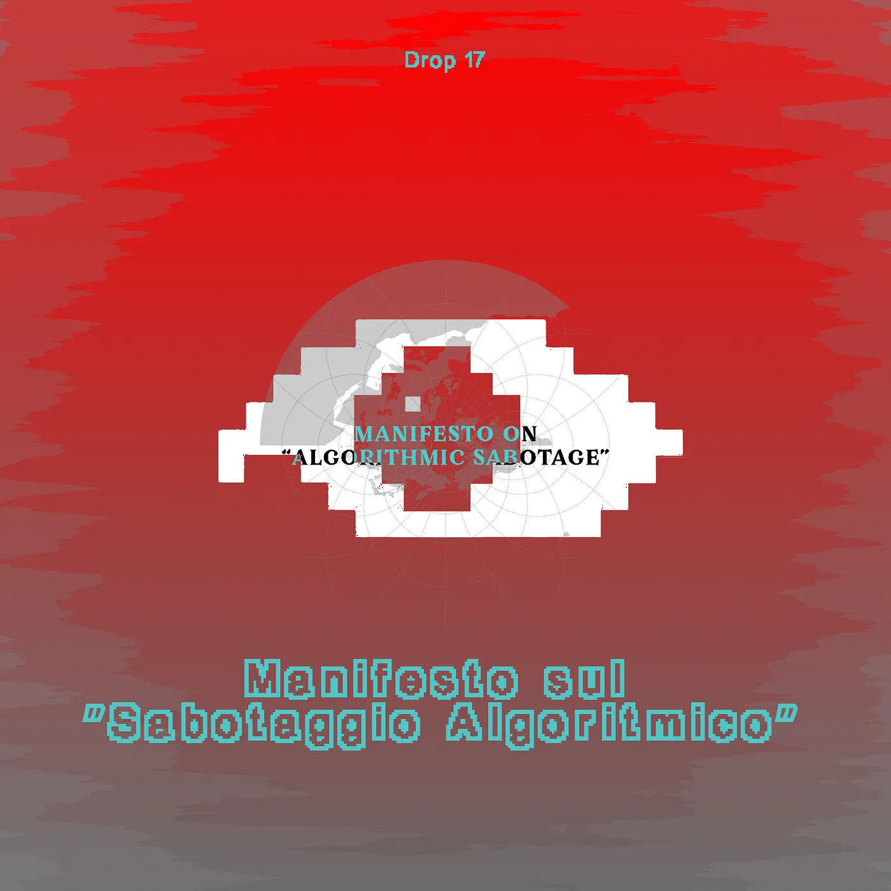
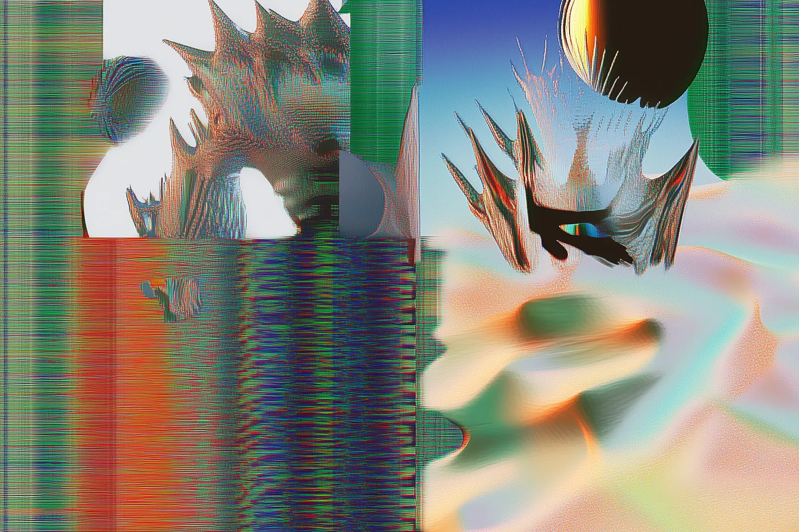

Drop #17 · September 17, 2024 · 4 min read
Hey everyone (▰˘◡˘▰)
Welcome back to Drops, REINCANTAMENTO’s newsletter. Summer’s over, the leaves are falling, and the global chaos spiral continues to spin into new depths.
But, every now and then, our dysfunctional networks still manage to create unexpected connections with potential allies.
Today’s Drop comes from one such encounter: the Algorithmic Sabotage Research Group (ASRG). ASRG is a conspiratorial, aesthetico-political, practice-led research initiative exploring the intersection of digital culture and information technology. We’ve contributed to the Italian translation of ASRG’s "Manifesto on Algorithmic Sabotage," which we’re excited to share again in this issue of Drops, alongside the original, published under the GNU Free Documentation License v1.3. As ASRG puts it:
”The Manifesto on “Algorithmic Sabotage” is a preliminary version of ten statements, numbered 0 to 9, on the principles, strategies and aesthetics of “algorithmic sabotage”. Its purpose is not only a theoretical dissemination of militant algorithmic agency and resistance, but the diffusion of radical theory/criticism that stems from the energy of insurrectionary desire. The Manifesto on “Algorithmic Sabotage” is the relentless march of a political theory that constantly and ambidirectionally turns discourse into praxis in order to declare its presence in the liberation struggle.”
If you want to propose an article for this newsletter send an email to reincantamento@gmail.com and consider donating or subscribing to support our work ^_^

Manifesto on “Algorithmic Sabotage”
by ASRG
Athens, May 2024
“Algorithmic Sabotage” is a figure of techno-disobedience for the militancy that’s absent from technology critique.
Rather than an atavistic aversion to technology, “Algorithmic Sabotage” can be read as a form of counter-power that emerges from the strength of the community that wields it.
“Algorithmic Sabotage” cuts through the capitalist ideological framework that thrives on misery by performing a labour of subversion in the present, dismantling contemporary forms of algorithmic domination and reclaiming spaces for ethical action from generalized thoughtlessness and automaticity.
“Algorithmic Sabotage” is an action-oriented commitment to solidarity that precedes any system of social, legal or algorithmic classification.
“Algorithmic Sabotage” is a part of a structural renewal of a wider movement for social autonomy that opposes the predations of hegemonic technology through wildcat direct action, consciously aligned itself with ideals of social justice and egalitarianism.
“Algorithmic Sabotage” radically reworks our technopolitical arrangements away from the structural injustices, supremacist perspectives and necropolitical authoritarian power layered into the “algorithmic empire”, highlighting its materiality and consequences in terms of both carbon emissions and the centralisation of control.
“Algorithmic Sabotage” refuses algorithmic humiliation for power and profit maximisation, focusing on activities of mutual aid and solidarity.
The first step of techno-politics is not technological but political. Radical feminist, anti-fascist and decolonial perspectives are a political challenge to “Algorithmic Sabotage”, placing matters of interdependence and collective care against reductive optimisations of the “algorithmic empire”.
“Algorithmic Sabotage” struggles against algorithmic violence and fascist techno-solutionism, focusing on artistic-activist resistances that can express a different mentality, a collective “counter-intelligence”.
“Algorithmic Sabotage” is an emancipatory defence of the need for communal constraint of harmful technology, a struggle against the abstract segregation “above” and “below” the algorithm.
Manifesto sul “Sabotaggio Algoritmico”
Translation by Alessandro Y. Longo
Atene, Maggio 2024
Il “Sabotaggio Algoritmico” rappresenta una forma di disobbedienza tecnologica che colma il vuoto di militanza presente nella critica della tecnologia.
Lungi dal rappresentare un’avversione atavica alla tecnologia, il “Sabotaggio Algoritmico” si configura come una pratica di contropotere, che emerge dalla forza collettiva della comunità che lo esercita.
Il “Sabotaggio Algoritmico” si inserisce all’interno di un quadro ideologico che mira a sovvertire le dinamiche capitalistiche che prosperano sulla miseria, agendo nel presente per smantellare le forme contemporanee di dominazione algoritmica e rivendicando spazi per l’azione etica, contro la sconsideratezza generalizzata e gi automatismi dominanti.
Il “Sabotaggio Algoritmico” è un impegno orientato all’azione solidale, che precede ogni sistema di classificazione sociale, legale o algoritmica.
Il “Sabotaggio Algoritmico” si inserisce in un processo di rinnovamento strutturale di un più ampio movimento per l’autonomia sociale, che si oppone alle predazioni della tecnologia egemonica attraverso un’azione diretta e selvaggia, consciamente allineata con ideali di giustizia sociale ed egualitarismo.
Il “Sabotaggio Algoritmico” opera una rielaborazione radicale dei nostri assetti tecno-politici, smarcandosi dalle ingiustizie strutturali, dalle prospettive suprematiste e dal potere autoritario necro-politico insiti nell’“impero algoritmico”, evidenziandone la materialità e le conseguenze in termini di emissioni di carbonio e centralizzazione del controllo.
Il “Sabotaggio Algoritmico” rigetta l’umiliazione algoritmica orientata alla massimizzazione del potere e del profitto, privilegiando invece attività di mutuo soccorso e solidarietà.
Il primo passo della tecno-politica non è di natura tecnologica, ma politica. Le prospettive femministe radicali, antifasciste e decoloniali costituiscono una sfida politica al “Sabotaggio Algoritmico”, ponendo al centro la questione dell’interdipendenza e della cura collettiva, contro le ottimizzazioni riduttive promosse dall’“impero algoritmico”.
Il “Sabotaggio Algoritmico” si oppone alla violenza algoritmica e al tecno-soluzionismo fascista, privilegiando forme di resistenza artistico-attivista in grado di esprimere una mentalità alternativa, una “contro-intelligenza” collettiva.
Il “Sabotaggio Algoritmico” è una difesa emancipatoria della necessità di una limitazione comunitaria della tecnologia dannosa, una lotta contro la segregazione astratta ‘sopra’ e ‘sotto’ l’algoritmo.
